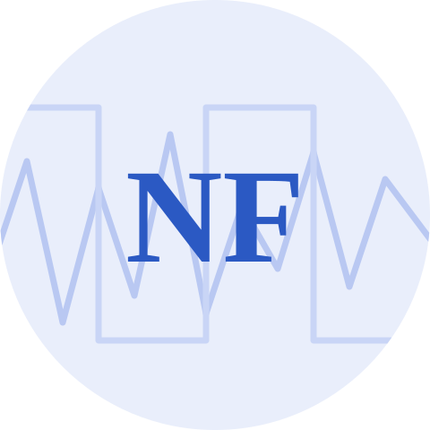

Nicholas Ferrari
Quantitative plant biologist. I study how photosynthesis regulates itself when the light won't hold still — combining biophysics, custom instrumentation, and signal processing. Ph.D. in Biochemistry, Louisiana State University, 2026.
About
I completed my Ph.D. in Biochemistry, with a minor in Mathematics, at Louisiana State University, working with David Vinyard. My dissertation treats the photosynthetic electron transport chain as a control system and asks a question that steady-state measurements can't answer: does it matter whether light fluctuates predictably?
It does. Using Chlamydomonas reinhardtii in light environments matched for total photon dose and for Total Variation — so the only remaining difference is whether the next change can be anticipated — I found that the regulatory system acclimates to the quantity of light stress but not to its unpredictability. Mutants lacking individual control mechanisms (qE, cyclic electron flow, Flv-mediated electron transfer, state transitions) each leave a separable signature in that response, and the cost of unpredictability reverses when conditions settle.
I got here by way of the RIPE project at the UIUC Institute for Genomic Biology, where I managed transgenic field trials and started asking why an engineered bypass improved biomass without moving the metabolite pools it was designed to move. Looking for a framework that could answer that led me to control theory and to Uri Alon's treatment of biological networks as analyzable circuits — which is still how I approach an experiment. Along the way I build the instruments and the analysis pipelines the questions require, which you can try out here.
Research interests
Acclimation to unpredictable light
Photosynthetic organisms in nature never see constant illumination. I design light environments that separate how much light moves from how predictably it moves, and measure what each costs the electron transport chain.
PSII kinetics & signal processing
Flash-induced measurements of Photosystem II mix a period-four donor signal with a period-two acceptor signal. Separating them first — with the Empirical Wavelet Transform — recovers kinetic parameters that direct fitting gets wrong.
Instruments & computational tools
Sub-millisecond LED flash systems on custom PCBs, multicultivators reprogrammed to deliver mathematically defined light, CAD-designed optics, genome-scale ortholog screens, and machine-learning image analysis.
Two of these are interactive on the Playground: the light-environment design and the Kok clock.
News
- Completed my Ph.D. in Biochemistry (minor in Mathematics) at LSU.
- First-author paper out in Plants: separating the parallel cycles of Photosystem II with the Empirical Wavelet Transform.
- Co-authored work on plastid carbonic anhydrases published in Plant Physiology.
- Talk on algal acclimation to stochastic light at the Midwest/Southeast Photosynthesis Conference.
- Presented kinetic modeling in dynamic environments at the Gordon Research Conference on CO₂ Assimilation in Plants.